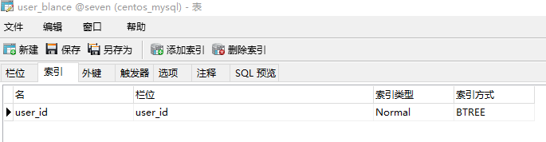

mysql-3 用户充值与转账功能的实现
在电商网站，我们经常会使用到充值与转账功能，接下来我们使用存储过程模拟充值过程。
本文涉及到的相关知识点
- 事务，自定义异常,表锁，行锁
- row_count:增加，修改影响的条数
- found_rows:查询影响的条数
mysql锁的详解
事务的详解
需求:安全性高，性能好的用户充值
解决方案:
设计表
- 用户余额表
CREATE TABLE `user_blance` ( `id` int(11) NOT NULL AUTO_INCREMENT COMMENT '用户充值表自增id', `user_id` int(11) NOT NULL COMMENT '用户id', `user_money` decimal(10,2) NOT NULL COMMENT '用户充值金额', PRIMARY KEY (`id`) ) ENGINE=InnoDB DEFAULT CHARSET=utf8; 用户充值记录表
CREATE TABLE `user_blance_log` ( `id` int(11) NOT NULL AUTO_INCREMENT COMMENT '用户充值记录表id', `user_id` int(11) DEFAULT NULL COMMENT '用户id', `log_type` int(11) DEFAULT NULL COMMENT '日志类型', `log_des` varchar(255) DEFAULT NULL COMMENT '日志描述', `log_value` decimal(10,2) DEFAULT NULL COMMENT '日志值', `log_time` timestamp NULL DEFAULT CURRENT_TIMESTAMP ON UPDATE CURRENT_TIMESTAMP COMMENT '日志记录时间', PRIMARY KEY (`id`) ) ENGINE=InnoDB DEFAULT CHARSET=utf8;用户充值的步骤
往日志表里面插入记录
若插入成功，则更新余额表的值，余额表里面需要判断用户id是否存在，如果存在则update否则insert
存储过程模拟充值
CREATE PROCEDURE chongzhi(IN _user_id int,IN _log_type tinyint,IN _log_des varchar(200),IN _log_value decimal(10,2))
BEGIN
#Routine body goes here...
DECLARE t_error int DEFAULT 0;
DECLARE usercount int DEFAULT 0;
#异常处理
DECLARE CONTINUE HANDLER for SQLEXCEPTION set t_error=1;
START TRANSACTION;
#插入用户充值日志表
INSERT INTO user_blance_log(user_id,log_type,log_des,log_value)VALUES(_user_id,_log_type,_log_des,_log_value);
#插入到充值表中
if ROW_COUNT()>0 THEN
#判断是否存在用户
SELECT COUNT(*) into usercount FROM user_blance WHERE user_id=_user_id;
#存在用，则执行update
if usercount>0 THEN
UPDATE user_blance set user_money=user_money+_log_value where user_id=_user_id;
ELSE
insert into user_blance(user_id,user_money)VALUES(_user_id,_log_value);
END IF;
END IF;
#出现异常，回滚
if t_error=1 THEN
ROLLBACK;
ELSE
COMMIT;
END IF;
END
异常
- 多线程并发，操作不当会造成数据数据冲突
解决方案:mysql表锁机制
表级锁：开销小，加锁快；不会出现死锁；锁定粒度大，发生锁冲突的概率最高，并发度最低。
MySQL表级锁有两种模式：表共享锁（Table Read Lock）和表独占写锁（Table Write Lock）。
对MyISAM的读锁，不会阻塞其他用户对同一表请求，但会阻塞对同一表的写请求；
对MyISAM的写锁，则会阻塞其他用户对同一表的读和写操作；
当一个线程获得对一个表的写锁后，只有持有锁线程可以对表进行更新操作。其他线程的读、写操作都会等待，直到锁被释放为止。
综上，我们应该对上述操作加上写锁
lock table user_blacne write;
call chongzhi(3,1,'充值',12)
UNLOCK tables;
保证用户余额表每次查询插入或者更新的时候只有一个会话独占，保证数据的准确性，如果在Innodb存储引擎下，使用行锁是最佳选择
用户转账的步骤
查询用户的余额，并锁住转账两个用户之间用户余额表的的行数据
对比余额跟要转账的额度，如果超过，则跳转余额不足，否则，则更改转帐人与被转帐人的余额
存储过程模拟用户转账与行锁
有索引并且使用了该索引当条件的时候就是行锁，
没有索引的时候就是表锁，且mysliam不支持行锁。
innodb 的行锁是在有索引的情况下,没有索引的表是锁定全表的.
在这里我们使用行级锁，保证并发操作时的数据正确性，行级锁并发度高，常用解决并发操作问题
行级锁有两个类型的锁，共享锁和排他锁，类似我么男表所中的读锁和写锁
首先为user_blance表添加用户id的索引，如图所示

业务过程:
CREATE PROCEDURE sp_transfer(IN fromuser int,IN touser int,IN _money decimal(10,2))
BEGIN
#Routine body goes here...
DECLARE fromuser_money DECIMAL(10,2) DEFAULT 0;
DECLARE touser_money DECIMAL(10,2) DEFAULT 0;
DECLARE error bit DEFAULT FALSE;
DECLARE CONTINUE HANDLER FOR SQLEXCEPTION SET @error=true;
START TRANSACTION;
#这里使用了行锁中的排他锁
SELECT user_money into fromuser_money from user_blance where user_id=fromuser for update;
SELECT user_money into touser_money from user_blance where user_id=touser for update;
if fromuser_money<_money THEN
COMMIT;
SELECT '钱不够' as result;
ELSE
set fromuser_money=fromuser_money-_money;
set touser_money=touser_money+_money;
UPDATE user_blance set user_money=fromuser_money WHERE user_id=fromuser;
UPDATE user_blance set user_money=touser_money WHERE user_id=touser;
END IF;
IF error=TRUE THEN
ROLLBACK;
SELECT '出错' as result;
ELSE
COMMIT;
SELECT '转帐成功！';
END IF;
END
最后调用存储过程
call sp_transfer